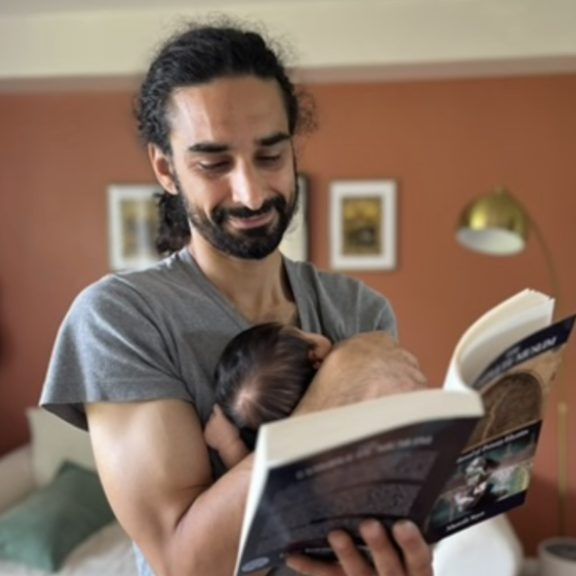

I teach data protection, run people-first AI workshops, and build tools that help people think for themselves. Lille, France.

I'm an Iraqi American living in Lille with my family. For about twenty years I've been learning and teaching by doing, together with people from Detroit and Boston to Baghdad, Beirut and Basra. In 2009 I co-founded All Hands Active, Ann Arbor's first hackerspace, and two years later Fikra Space, the first hackerspace in Baghdad. After that I co-founded Bloom, an accelerator for social entrepreneurs that has worked with more than a thousand founders across sixteen countries in Southwest Asia and North Africa. Along the way I designed curriculum for the UN in Iraq, and I wrote my master's thesis in Learning Sciences at Université de Paris on how Lebanese social entrepreneurs grew after the Beirut port explosion.
These days I build tools at Adab Studio that help people think and read for themselves, rather than hand their thinking over to AI. Cursive is a writing companion that strengthens your thinking and then gets out of the way, Versed is a bilingual Arabic and English reader, and Sourced shows you what an AI is assuming about you. What I love most, though, is being in a room with people and helping them find what is beautiful in them and bring it into the world.
I teach Data Protection in the Master's in International Relations and Risk Management at the Université Catholique de Lille. It's a highly interactive, case-study based course in which students follow one fictional organisation through a semester of real decisions, and I would be glad to bring it, or something like it, to your school.
My way of facilitating is people-first: I listen to the room and adapt as we go, so each session ends up fitting the people who are in it. My French is still growing, so I teach in English, and I'm glad to come to you in Lille or in Paris.
This month I'm teaching the last sessions of my Data Protection course, which ends in December, and I'm reaching out to schools around Lille about teaching with them next year. I'm also getting Cursive ready for its first real users, and slowly finding my way back to sharing my work in public after a few quiet years.
The easiest way to reach me is by email, and I'm always glad to hear from people.
More of my work lives on my blog: